Discovering the Serenity of A & A Of The North: A Beachfront Resort in Zambales
The province of Zambales is one of my go-to destinations if I want to chill and relax. It's a great place for those looking for an oasis of serenity. While Zambales is known for its stunning beaches, there's a lovely beachfront resort that stands out among the rest—A & A of the North. In this blog post, I invite you to embark on a virtual journey to this serene beach destination, where tranquility meets the captivating beauty of the North.
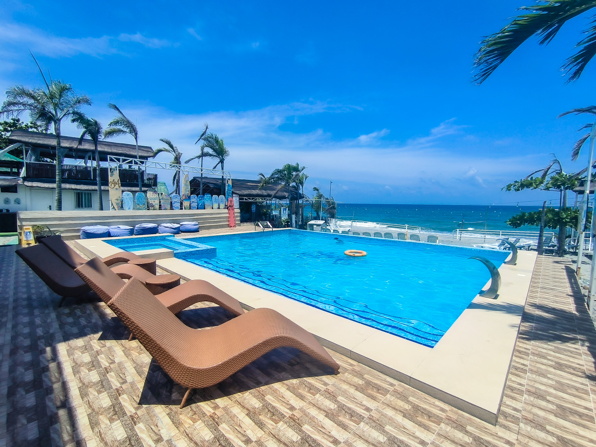Unveiling the Beauty of A and A Beach
When it comes to pristine fine sands and clear blue waters, A & A of the North Beach Resort is unparalleled. Located in the humble town of Cabangan, this enchanting coastal haven offers a serene retreat for beach lovers seeking solace away from the bustling city life. Whether you're a nature enthusiast, an adventure seeker, or simply someone yearning for a peaceful escape, A & A of the North has something for everyone.
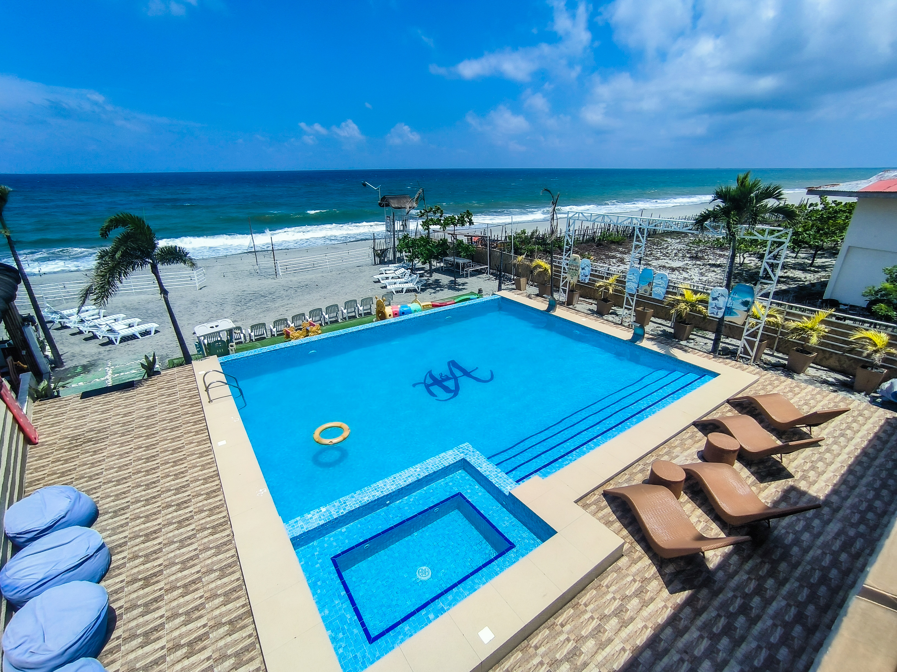How To Get There
To reach A and A of the North Beach Resort, you can go to Cubao or Pasay and take a Victory Liner bound for Iba, Zambales. Tell the driver to drop you off in Casabaan, Cabangan ( P480- P510). From there, take a tricycle and tell the driver that you are going to A and A of the North (P70/ Special)
Another option is to fly into Clark International Airport, which serves as the gateway to Zambales. From there, you can hire a private car or take a bus bound for Olongapo, and drop off in Victory Liner terminal. From there, you take a bus bound Iba or Santa Cruz, Zambales. Tell the driver to drop you off in Casabaan, Cabangan ( P100). From there, take a tricycle and tell the driver that you are going to A and A of the North Beach Resort ( P70/ special)
Discover the Hidden Gem of Zambales: Nagsasa Cove – A Paradise Unveiled
Apart from Anawangin and Capones Island, one of my favorite beach destinations in Zambales is Nagsasa Cove. This secluded gem offers an escape from the hustle and bustle of city life, presenting visitors with pristine beaches, majestic mountains, and a serene ambiance that will leave you rejuvenated and inspired. In this blog post, I will explore the wonders of Nagsasa Cove, uncover its natural beauty, and provide you with all the essential information you need to plan an unforgettable getaway.
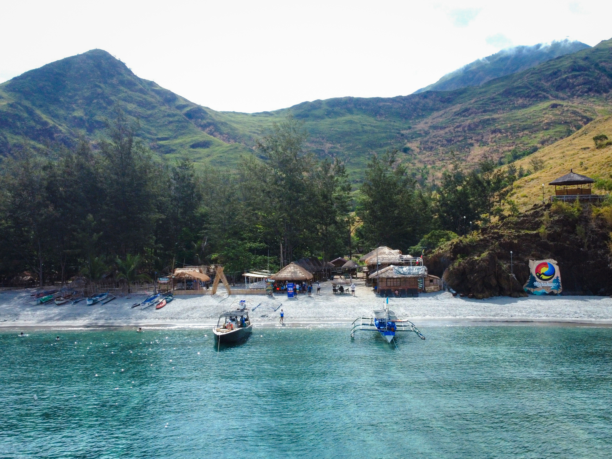The Enchanting Beauty of Nagsasa Cove
As you step foot on the shores of Nagsasa Cove, you'll be captivated by its untouched beauty. The crystal-clear turquoise waters gently kiss the powdery white sand, while lush greenery surrounds the cove, creating a picturesque backdrop for your adventures. Towering mountains complete the panorama, offering breathtaking hiking trails and panoramic viewpoints that will take your breath away. Aside from swimming on the beach, you have option to stay in their lovely swimming pool.

Must-Do Activities:
Beach Bliss:
Spend your days basking in the sun, taking refreshing dips in the inviting waters, or simply lounging on the beach while indulging in a good book. Nagsasa Cove is a haven for beach lovers, providing a serene environment for ultimate relaxation.

Island Hopping:
Embark on an unforgettable island-hopping adventure and explore nearby islands such as Capones and Anawangin Cove. Marvel at the towering rock formations, go snorkeling amidst vibrant coral reefs, and discover hidden lagoons that will leave you in awe.
Trekking to Mount Nagsasa:
Lace up your hiking boots and embark on a trek to Mount Nagsasa, which offers panoramic views of the surrounding landscapes. The trek is relatively moderate, making it accessible to both novice and experienced hikers.

Camping under the Stars
Immerse yourself in nature by camping under the starry sky at Nagsasa Cove. With its tranquil surroundings and cool sea breeze, it's the perfect setting for a memorable camping experience. Roast marshmallows by a crackling bonfire, share stories with fellow campers, and fall asleep to the soothing sound of the waves lapping against the shore. A drinking session is allowed but please make sure to respect other's time, especially after 10PM.

Practical Tips for Your Visit
Getting There:
Nagsasa Cove is accessible by land and boat. Take a Victory Liner bus bound for Iba, Zambales in Cubao and Pasay ( P300-400). Tell the driver to drop you off in San Antonio. From there, take a tricycle to Pundaquit Beach ( P60-80). Regular boat transfers are available, and the journey takes approximately around 30-45 minutes ( 1200-P1500).

Accommodation:
While Nagsasa Cove is known for camping, there are also small cottages with aircon available for rent if you prefer a more comfortable stay. Make sure to book your accommodation in advance, especially during peak seasons (room starts at P1500). To book a room, you may contact Marahuyo Cove Resort and Camping at 09060918973 or email them at marahuyocoveresort@gmail.com. Remember, walk ins are not allowed and their amenities are not open to public. Though the cove has no signal, Marahuyo resort offers a satellite internet which is exclusive use for their guests only.
Essential Items:
Don't forget to pack essentials such as sunscreen, insect repellent, camping gear, and sufficient drinking water. It's also advisable to bring your own food supplies, as there are limited dining options available.

Things to Remember in Nagsasa Cove
1. Electricity is available
2. There's no signal in the area
3. Camping is allowed. Fan and air-conditioned are available.
4. There's a store but it has limited supplies.
5. Respect others, especially at night.
6. Keep your trash and don't leave it on the cove
Exploring Paradise: Island Hopping in San Antonio, Zambales
Escape to the serene paradise of Zambales and immerse yourself in the natural beauty of Anawangin, Nagsasa, Silanguin, Talisayin, Camara and Capones Island. These are the reasons why I keep coming back to this lovely province. Join me as I take you on a journey through these breathtaking coves and islands, each with its unique charm and allure.
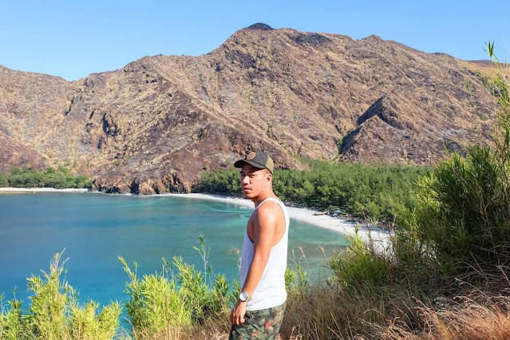Anawangin Cove
Anawangin Cove is one of the first destinations I visited in Zambales. It is renowned for its unique and mesmerizing landscapes. As you set foot on its shores, you'll be greeted by a picturesque combination of pine trees, volcanic ash-covered beach, and azure waters. The contrasting scenery creates an otherworldly ambiance that sets Anawangin Cove apart from any other beach destination. There are many outdoor activities to do in this popular cove such as swimming, trekking, paddling, ATV, banana boat and many more! Traveling time from Pundaquit Beach to Anawangin Cove is around 20 minutes.
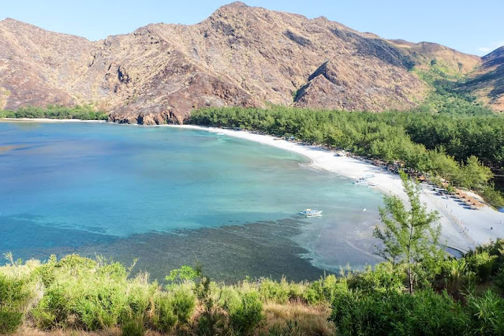One of the most remarkable features of Anawangin Cove is the opportunity for camping amidst nature's grandeur. Imagine pitching your tent under the shade of towering pine trees, with the sound of gentle waves lulling you to sleep. Camping at Anawangin Cove provides a chance to disconnect from the digital world, reconnect with loved ones, and experience the simple joys of nature. If you are not into camping, you can book an air-conditioned room at Destinare Beach Resort and Camping. The room rates start at P2500.
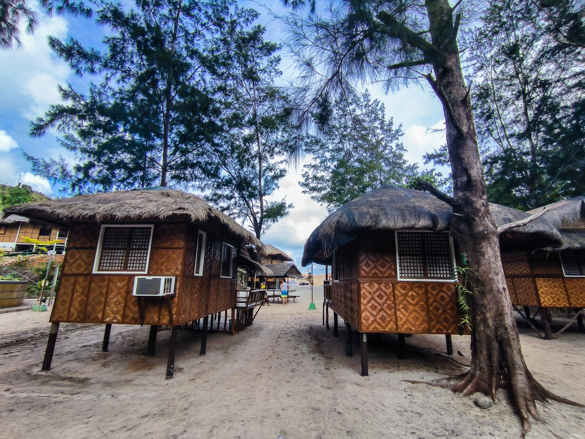Nagsasa Cove
Escape to the serene beauty of Nagsasa Cove, a hidden gem nestled amidst the beautiful landscapes of Zambales. With its pristine shores, picturesque mountains, and calm waters, Nagsasa Cove offers a tranquil retreat away from the chaos of daily life. Be amazed by the enchanting allure of Nagsasa Cove, a coastal paradise that promises a rejuvenating escape. If you are looking for a less crowd, I highly recommend to stay at Nagsasa Cove instead of Anawangin Cove.

This beach destination is a true haven for those seeking peace and tranquility. Surrounded by lush mountains and set against a backdrop of crystal-clear waters, this cove exudes a sense of serenity that instantly washes away the stresses of everyday life. With its untouched beauty, Nagsasa Cove offers a retreat for the soul, allowing you to reconnect with nature and find solace in its peaceful atmosphere.
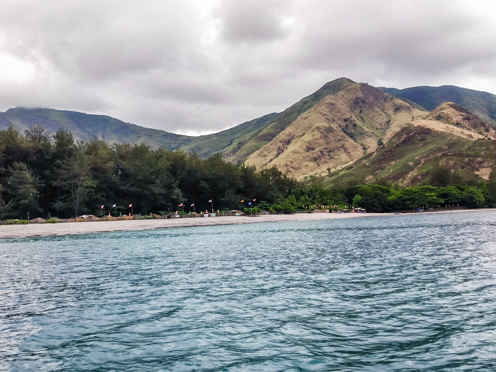Talisayin Cove
Welcome to Talisayin Cove, a hidden gem tucked away along the stunning coast of Zambales. With its untouched beauty, crystal-clear waters, and tranquil atmosphere, Talisayin Cove offers a secluded paradise for nature lovers and adventurers alike. It's a coastal haven waiting to be discovered.

This tourist spot is a true hidden gem, off the beaten path and away from the crowds. As you step foot onto its shores, you'll be greeted by a breathtaking landscape of powdery white sand, framed by majestic cliffs and swaying palm trees. The pristine beauty of Talisayin Cove creates a sense of serenity and tranquility that will instantly captivate your senses.
DIY Travel Guide to Anawangin Cove, Zambales
Nestled along the stunning coast of Zambales in the Philippines, Anawangin Cove is a hidden gem that offers a perfect blend of natural beauty and exhilarating adventures. Thrill-seekers and nature enthusiasts can indulge in a wide range of exciting activities like swimming, trekking, camping, and a lot more. In this travel blog post, I'll explore the captivating wonders of Anawangin and why it's a must-visit destination for anyone seeking outdoor excitement and breathtaking landscapes.
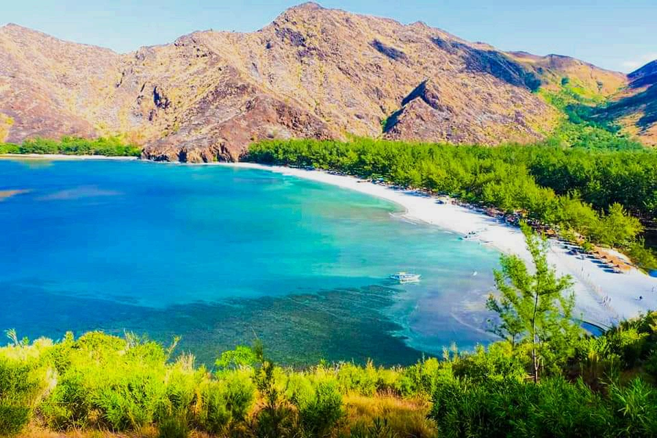How to get to Anawagin
To get to Anawangin in Zambales by land and boat, you can follow these steps:
Land Travel:
From Manila, you have two main options: take a bus or drive a private vehicle. The most common route is via San Fernando, Pampanga.
If you're taking a bus, go to any of the bus terminals in Manila (e.g., Victory Liner, Genesis, or Five Star) and look for buses bound for Iba, Zambales. Make sure to inform the driver or conductor that you're getting off at San Antonio, Zambales, specifically for Anawangin. The fare is from P380 to P450.
If you're driving, you can take the North Luzon Expressway (NLEX) and exit at San Fernando. From there, take the Jose Abad Santos Avenue (formerly Olongapo-Gapan Road) heading to the towns of Bacolor, Guagua, and Lubao, until you reach the intersection of Lubao. Turn right and follow the road leading to the towns of Porac and Floridablanca. Continue driving until you reach Subic-Clark-Tarlac Expressway (SCTEX) and take the Subic Freeport Expressway (SFEX) exit. This will lead you to the Subic Bay Metropolitan Authority (SBMA) area and onto the Olongapo City-Ramirez-San Marcelino Road. Finally, follow the signs to San Antonio, Zambales.

Boat Transfer:
Once you arrive in San Antonio, Zambales, you need to proceed to Pundaquit Beach. This is where you can find boats that will take you to Anawangin Cove. From the main road, you can take a tricycle and tell the driver that you will go to Anawangin. The driver will drop you off at Pundaquit Beach. It's a short ride, approximately 15-20 minutes.
At Pundaquit Beach, there are boatmen who offer island hopping services. You can negotiate with them for a boat ride to Anawangin Cove. The boat ride typically takes around 30 minutes to an hour, depending on the weather conditions. The fare is around P250 / pax.
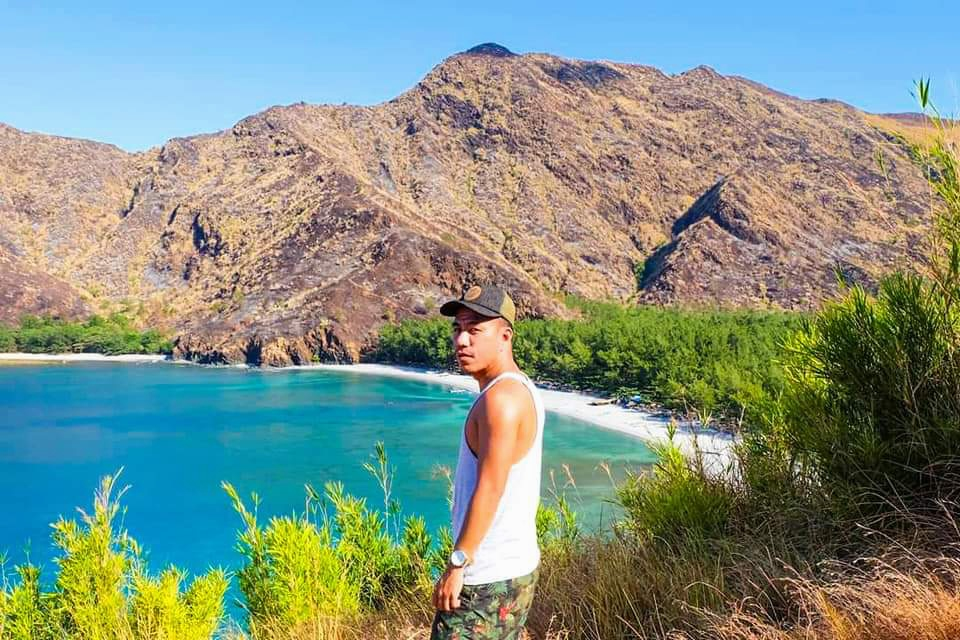Camping Amidst Nature's Splendor:
Anawangin Cove is known for its pristine shores and agoho pine trees, creating a perfect backdrop for camping enthusiasts. It offers camping sites where you can set up your tent and immerse yourself in the beauty of the surroundings. Fall asleep under a blanket of stars and wake up to the soothing sounds of nature in this idyllic paradise.
Trekking and Hiking:
Explore the untamed beauty of Anawangin Cove through exhilarating trekking and hiking trails. Lace up your hiking boots and embark on a journey through the rugged terrain, discovering hidden waterfalls, panoramic viewpoints, and the breathtaking flora and fauna that inhabit the area. Be prepared to be amazed by the raw and untouched beauty of Zambales' natural landscapes. One of the newest attractions in the cove is Wishing Mountain.

Cliff Diving and Rock Climbing:
For adrenaline junkies, Adventure Cove offers opportunities for cliff diving and rock climbing. Test your courage by leaping off towering cliffs into the crystal-clear waters below. Or challenge yourself with rock climbing, conquering the rugged rock formations and enjoying a bird's-eye view of the cove. These activities provide an exhilarating rush while surrounded by the stunning coastal scenery.
Kayaking and Paddleboarding:
Venture out onto the calm waters of Anawangin Cove on a kayak or paddleboard adventure. Explore the hidden corners of the cove, navigate through narrow channels, and revel in the tranquility of the surroundings. Paddle your way through the clear turquoise waters, discovering hidden caves and pristine beaches along the coastline.
Island Hopping and Snorkeling:
Anawagin Cove offers the opportunity to embark on an island-hopping adventure to nearby islands and islets like Capones Island, Camara island, Nagsasa Cove, Silanguin Cove. Explore the vibrant marine life as you snorkel in the crystal-clear waters, witnessing the colorful coral reefs and swimming alongside a myriad of tropical fish. Immerse yourself in the underwater wonders of Anawangin Cove and create unforgettable memories.

Where to stay in Anawangin
Anawangin Cove in Zambales is a popular camping destination. In the past, the usual accommodation option in Anawangin Cove is camping. Visitors typically bring their own tents and camping gear to set up camp on the beach or in designated camping areas. Good thing there are two resorts now in the cove that offer fan and air-conditioned rooms. One of them is Destinare Beach Resort and Camping. The entrance fee is P130 and room rates start at P2500. You may contact the resort at 09985545304, 09663615923, 09674524586 and 09612782417
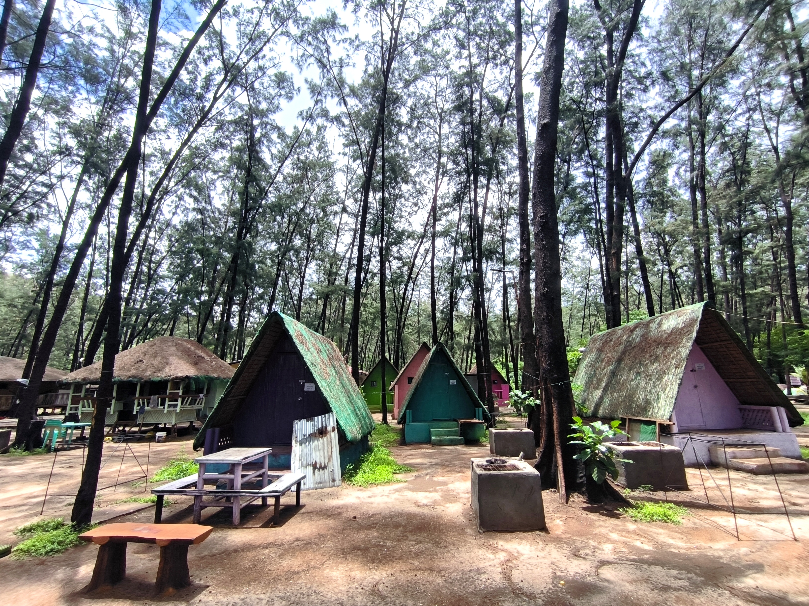If you prefer more comfortable accommodations, you can consider staying in nearby towns such as San Antonio or Pundaquit. These towns have resorts, guesthouses, and homestays that offer a more conventional stay with amenities such as electricity, running water, and proper bathrooms. One of the highly recommended resorts is Emon Pulo in Silanguin Cove. You may contact them at 0998 558 3333.From there, you can arrange day trips or boat transfers to Anawangin Cove for a visit.
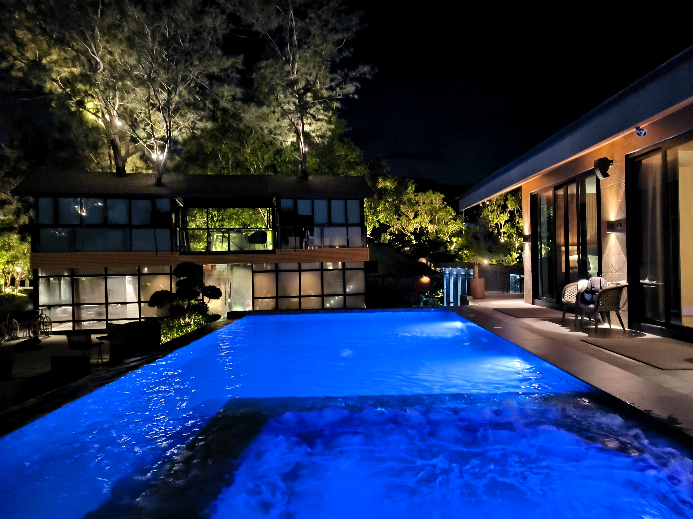